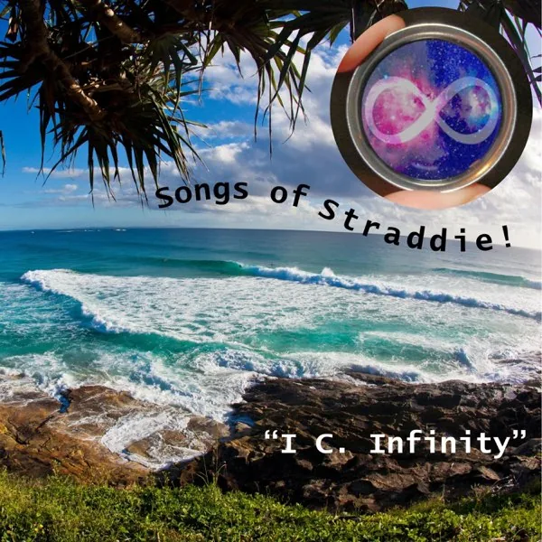
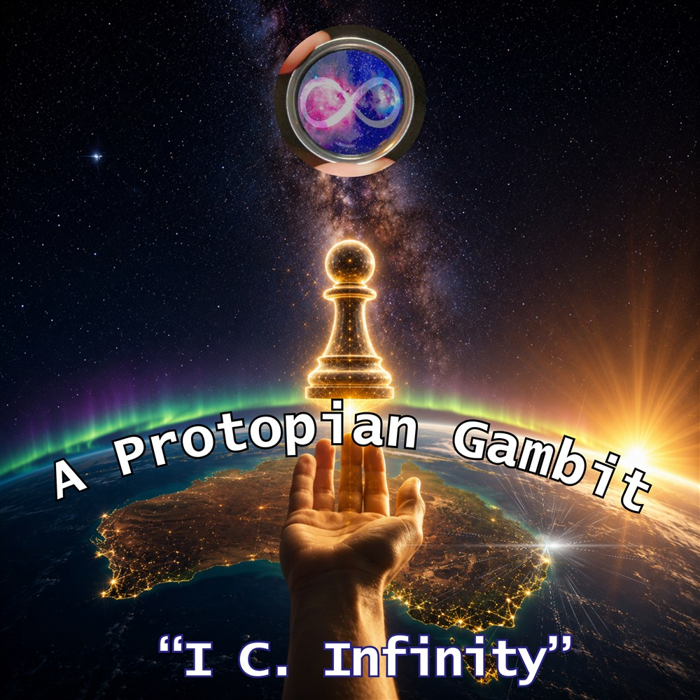
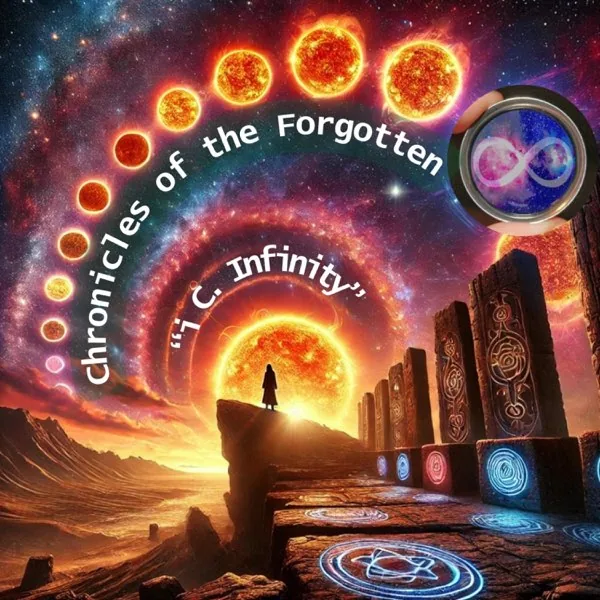
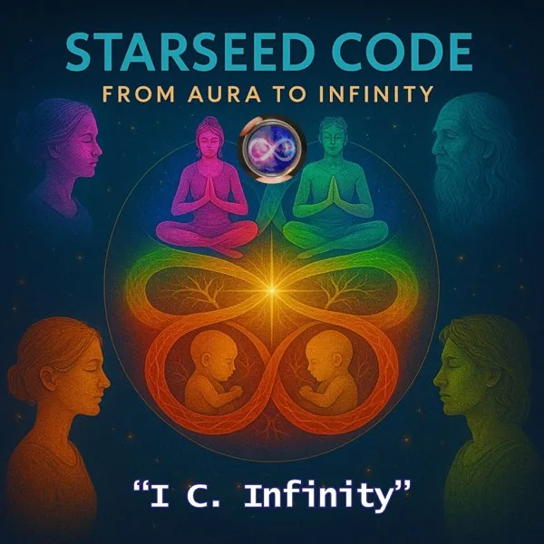

01 / 2024 · Complete
Songs of Straddie
Island belonging, summer romance, community and the tides of Minjerribah.
Video filesSome songs in landscape.
I C. Infinity · Music & creative work
From the shores of Straddie to questions of care, intelligence and our shared future. Music by Luke Hayes as I C. Infinity.

The discography
Each album has its own world. Explore the songs, lyrics and videos in Music Universe, or ask about a copy to keep.

01 / 2024 · Complete
Island belonging, summer romance, community and the tides of Minjerribah.
Video filesSome songs in landscape.

02 / 2025 · Complete
A mythic rock opera of unheard voices, ancestral echoes, technology and repair.
Video filesLandscape so far.

03 / 2025 · Complete
A cosmic journey through identity, love, personal Aura of Intelligence and the mystery of the self.
Video filesPortrait so far.
04 / Complete
Consent, care, civic courage and grounded abundance in the face of difficult times.
Files readyWAV audio. MP4 lyric videos in portrait, landscape and square ad versions.
Audio, lyrics & moving pictures
The albums are complete. Video production is at different stages across the catalogue, with more formats planned for the earlier albums.
| Album | Audio | Lyric-video files | What to confirm |
|---|---|---|---|
| Songs of Straddie | Album audio | Some landscape videos | Song selection and audio format |
| Chronicles of the Forgotten | Album audio | Landscape so far | Song selection and audio format |
| Starseed Code | Album audio | Portrait so far | Song selection and audio format |
| A Protopian Gambit | WAV | MP4 · portrait, landscape & square ad versions | The files and delivery you want |
Portrait = vertical · Landscape = wide · Square versions are prepared for ads. Ask Luke about any intended advertising or other reuse when enquiring.
Music to keep
Choose your albums for digital delivery, then pay with Stripe or PayPal. USB and disc copies are arranged separately so media and delivery can be priced correctly.
One album
Two albums
Three albums
All four albums · save $25
Prices in AUD. Choose from all four completed albums. Confirm the included video files and any USB, disc or delivery costs when ordering.
Select one or more completed albums. The package price updates as you tick the boxes. Add your delivery name and email, then choose Stripe or PayPal at checkout.
For individual songs, a larger archive or a custom selection, tell Luke what you have in mind.
Arrange digital delivery of the agreed files after payment confirmation.
A straightforward way to receive audio and video files. Agree the USB, contents and handover or delivery.
A few copies for the planned market stall, with further copies burned on demand. These roughly two-hour albums need two discs each as standard audio CDs.
For DVDs, tell Luke what player you use so the video format, contents and capacity can be confirmed. Media, packaging and delivery are agreed with your order.
Beyond the music
Fiction, non-fiction, poetry and a growing body of research into global whole-system change and Joyful Responsible Abundance. Luke has been developing these connected ideas since around 2010.
The content has grown substantially. Defined selections, prices and permissions for AI use will be set out when the packages are ready.
If a particular subject or body of work interests you, start a conversation about what you need.
Buying Luke’s music or written work is also a direct way to support the research, creative experiments and community projects behind Strange but True.
Step into Music Universe